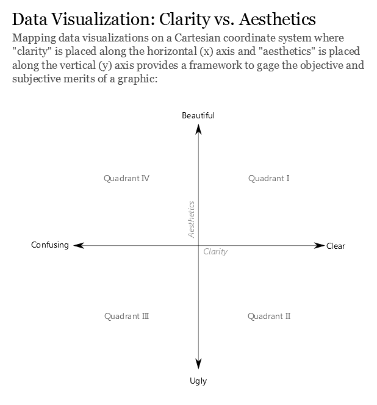
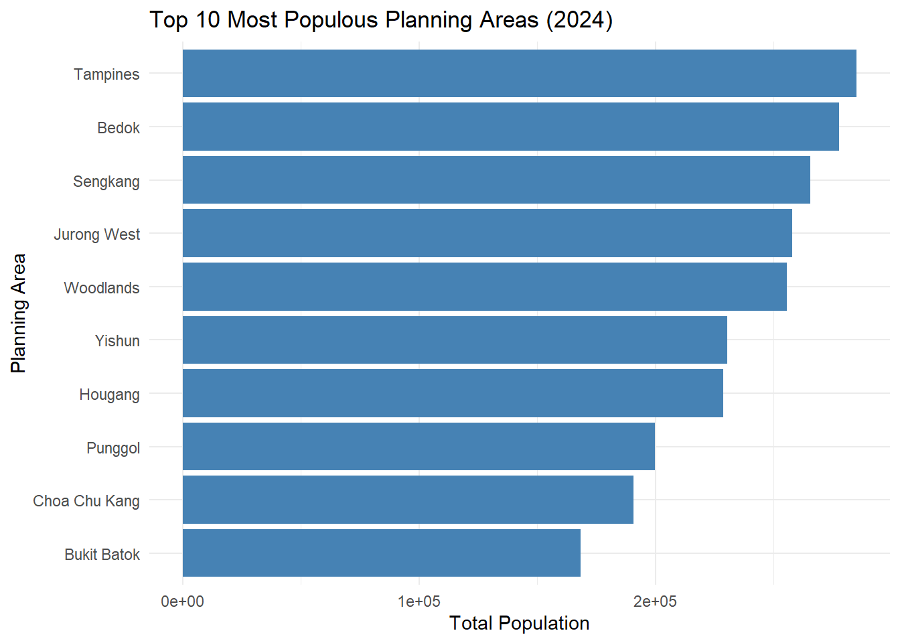
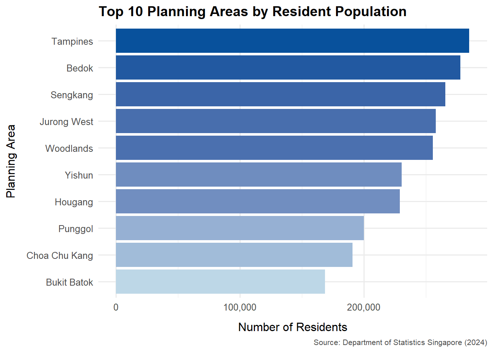

pacman::p_load(ggrepel, patchwork,
tidyverse, scales,
ggridges) Take-home Exercise 1 Phase 2
1 Overview
1.1 Objective
This exercise aims to enhance a visualisation originally created by a fellow course-mate as a graphic editor of a media company that publishes daily content on digital platforms. The critique will be made with reference to the following principles extracted from Ben Jones’ article (“Data Visualization: Clarity or Aesthetics?”).

2 Getting started
2.1 Load packages
The following R packages will be loaded using the pacman::p_load() function.
2.2 Import data
This exercise will be using the same dataset as Phase 1 of Take-Home Exercise 1. Thus, proceed to import data with the following code.
data <- read_csv("data/respopagesex2024.csv")2.3 Data preprocessing
Since the goal of this exercise is to provide critiques on the original visualisation, the data pre-processing will follow the process of the original visualisation.
3 Visualisation selected
3.1 Original Work
The chosen submission had the following visualisation for Top 10 Planning Areas by Total Population.

top_pa <- data %>%
group_by(PA) %>%
summarise(Total_Pop = sum(Pop)) %>%
arrange(desc(Total_Pop)) %>%
slice_head(n = 10)
ggplot(top_pa, aes(x = reorder(PA, Total_Pop), y = Total_Pop)) +
geom_col(fill = "steelblue") +
coord_flip() +
labs(title = "Top 10 Most Populous Planning Areas (2024)",
x = "Planning Area", y = "Total Population") +
theme_minimal()3.2 Critique
Clarity
Why it is clear:
Clear and purposeful layout: Bar chart is a good choice for communicating ranked categorical data. It is simple, direct and allows readers to immediately grasp the key message of the data visualisation.
Logical ordering: The planning areas are arranged in descending order based on population size. This allows readers to quickly identify which areas are the most densely populated at the first glance and easily understand relative magnitude.
Why it can be confusing:
Scientific notation undermines readability: Displaying population values in scientific notations will require readers to engage in additional cognitive effort and may be difficult for non-technical readers. This introduces friction into the reading experience. On fast-scrolling digital platforms, accessible by general public of all ages and abilities, reducing interpretation barriers is critical.
Title and labels lack specificity: The title does not specify the scope of population (whether non-residents are included). Similarly, the x-axis label “Total Population” which is vague in a demographic context where definitions matter.
Aesthetic
Why it is beautiful:
Simple and clean theme with faint gridlines: There are no unnecessary details, thus successfully avoiding distractions that do not contribute to understanding.
Orientation of bar chart: Horizontal orientation is able to accommodate long planning area names without truncation or overlapping, which enhances readability.
Why it can be ugly:
- Dull visualisation: While using a single blue shade avoids unnecessary noise, it fails to enhance visual interest or guide the reader’s attention. As Ben Jones mentioned, aesthetics and clarity can come hand-in-hand where aesthetics can aid clarity when used meaningfully. Applying a colour gradient, dark to light based on population size, or selectively highlighting the most populous area, would create visual contrast that draws attention and support the ranking narrative, without adding clutter.
3.3 Remake
Based on the critique in section 3.2, a revised version of the original visualisation has been created. It retains the strengths of the original visualisation while refining the areas identified for improvement.

# Summarise top 10 planning areas by resident population
top_pa <- data %>%
group_by(PA) %>%
summarise(Total_Pop = sum(Pop)) %>%
arrange(desc(Total_Pop)) %>%
slice_head(n = 10)
# Prepare data for plotting
top_pa <- top_pa %>%
arrange(desc(Total_Pop)) %>%
mutate(PA = factor(PA, levels = rev(PA)),
Fill = Total_Pop)
# Create the plot
ggplot(top_pa, aes(x = PA, y = Total_Pop, fill = Fill)) +
geom_col() +
coord_flip() +
scale_fill_gradient(low = "#bdd7e7", high = "#08519c", guide = "none") +
scale_y_continuous(labels = comma) +
labs(
title = "Top 10 Planning Areas by Resident Population",
x = "Planning Area",
y = "Number of Residents",
caption = "Source: Department of Statistics Singapore (2024)"
) +
theme_minimal(base_size = 12) +
theme(
plot.title = element_text(face = "bold"),
axis.title.x = element_text(margin = margin(t = 10)),
axis.title.y = element_text(margin = margin(r = 10)),
plot.caption = element_text(hjust = 1, size = 8, color = "gray30")
)